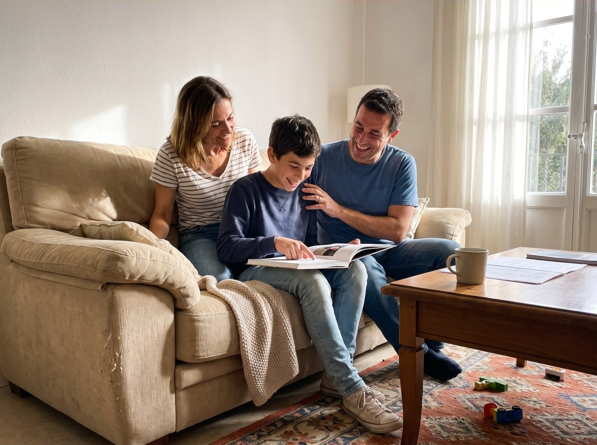
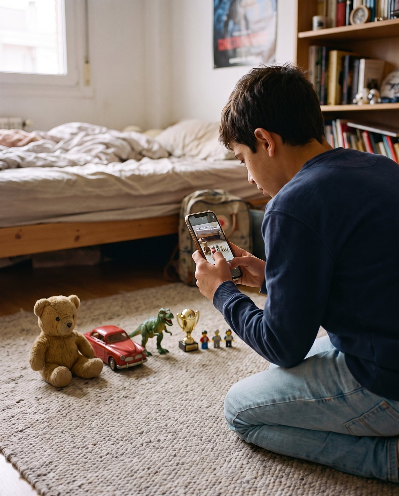

«Mi hijo no para de releerlo. Le hace muchísima gracia escucharse con su voz de ahora.»
Marta · libro de su hijoSus audios son privados, solo para vosotros
Pago único, sin suscripciones
Si al final no quiere hacerlo, te devolvemos el dinero
Sus audios son privados
Los dibujos se pierden.
Lo que pensaba, también.
Guardamos sus fotos y sus notas del cole, pero no cómo pensaba a esa edad. Ni él mismo lo va a recordar.
CÓMO FUNCIONA
Si sabe mandar un audio, ya puede escribir su libro.
Las preguntas le llegan a tu móvil. Él contesta hablando, cuando le apetece. Del resto nos ocupamos nosotros.
01
PASO 1Él cuenta su mundo
Preguntas pensadas para su edad: su mejor amigo, lo que le hace reír, lo que le da miedo, lo que quiere ser. Responde con audios.
02
PASO 2Escribimos su libro
Convertimos sus audios en capítulos, con sus palabras y su forma de decir las cosas. Sin corregirle la manera de pensar.
03
PASO 3Lo guarda para siempre
Su libro en PDF con su voz y, si quieres, impreso en tapa dura. Para leerlo juntos ahora y que lo abra de mayor.

ASÍ LO CUENTA
Él habla. Nosotros escribimos.
Las preguntas llegan a tu móvil. Nico se sienta donde quiere y contesta con un audio, como cuando le cuenta algo a un amigo. Sin pantallas nuevas, sin deberes.

EL LIBRO
Su mundo, contado por él.
Sus amigos, sus juegos, el cole, sus héroes y lo que imagina para cuando sea mayor. Capítulos, índice y sus frases más suyas en una página aparte.
Mi mundoMis amigosLo que me hace reírLo que me da miedoMis héroesCuando sea mayor
EN CASA
Hoy lo leéis juntos. Mañana lo abre él.
Sus juguetes, sus amigos, lo que le hace reír. Todo lo que hoy le importa acaba en un libro que la familia lee en el sofá y que él guardará para siempre.


SU VOZ
Dentro de veinte años, su voz de niño seguirá ahí.
Sus mejores frases quedan grabadas con su voz de ahora: cómo se ríe, cómo empieza las frases, cómo dice las palabras que aún no le salen. Se escuchan en la web o con el QR del libro impreso.
CAPÍTULO 1 · MI MUNDO
0:31
«Mi sitio favorito es la portería del patio, porque desde ahí se ve todo el partido y nadie me dice lo que tengo que hacer.»
PARA REGALAR
El regalo que va a abrir de mayor.
Para un cumpleaños, una comunión o fin de curso. Hoy lo lee con vosotros; dentro de veinte años lo va a abrir él solo.
Eliges el día en que empieza
Tarjeta para imprimir y regalar
Abuelos y tíos pueden pedir su ejemplar impreso
LO QUE QUEDA
Lo que hoy le importa, guardado para cuando crezca.
Ni las fotos ni los vídeos guardan cómo pensaba. Este libro, sí.
OPINIONES
Lo que dicen los padres.
«Se lo regalamos por su comunión y fue lo que más ilusión le hizo de todo.»
Javier · regalo de comunión«Contestaba los audios antes de cenar, como un juego. Nos enteramos de cosas que no nos contaba.»
Elena · libro de su hijaEL PRECIO
Un solo pago. Sin sorpresas después.
desde49 €
El libro en PDF con su voz va siempre. Con el libro impreso en tapa dura, 99 €: lo eliges al comprar o después.
Empezar su libroPreguntas pensadas para su edad, a su ritmo
Las respuestas llegan a tu móvil
El libro en PDF con «Su voz», para descargar y guardar
Impreso en tapa dura, si lo quieres
Si al final no quiere hacerlo, te devolvemos el dinero completo.
PREGUNTAS
Lo que suelen preguntarnos.
¿Desde qué edad funciona?+
Está pensado para niños de 11 a 13 años, que ya cuentan bien sus cosas pero todavía piensan como niños.
¿Necesita un móvil propio?+
No. Las preguntas llegan al WhatsApp de su padre o su madre, y él responde con audios desde ahí.
¿Quién escucha sus audios?+
Vosotros y el equipo que escribe su libro, con herramientas de transcripción y de escritura con IA que solo se usan para eso. Nadie más tiene acceso. Los audios son privados, se usan únicamente para su libro y se pueden borrar cuando queráis.
¿Y si se aburre a mitad?+
Las preguntas esperan. Puede responder cuando le apetezca, y con diez respuestas ya sale un libro, más corto.
SU FOTO, EN CASA
Un marco con su foto, para los abuelos.
Marco negro con la foto que elijáis. Lleva un chip escondido: acercan el móvil al marco y se abre su libro y suena su voz.
+20 €Marco 13 × 18 cm · también con el libro digital